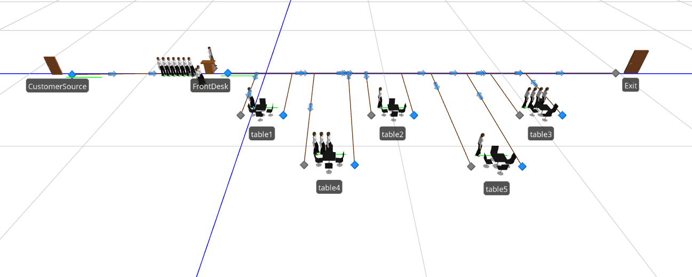
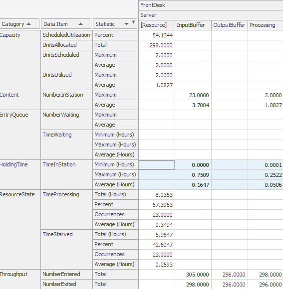
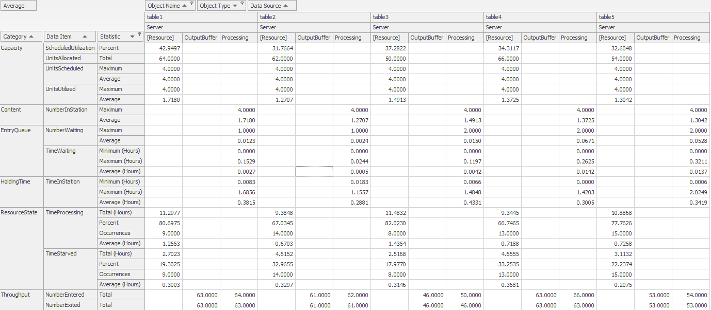
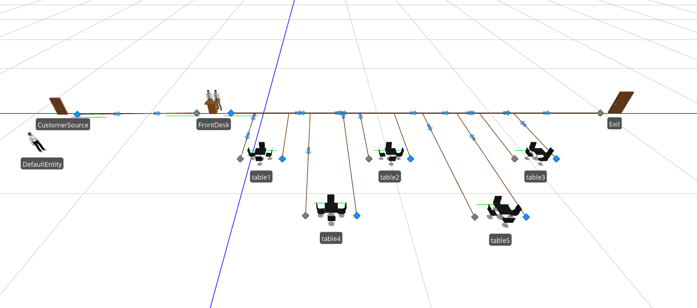
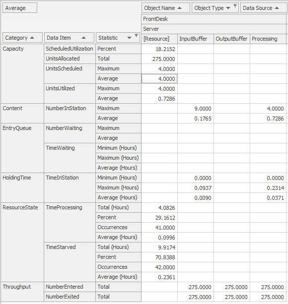
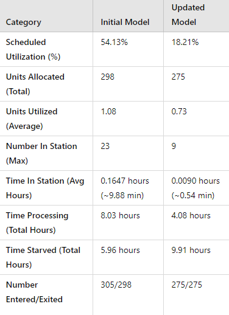
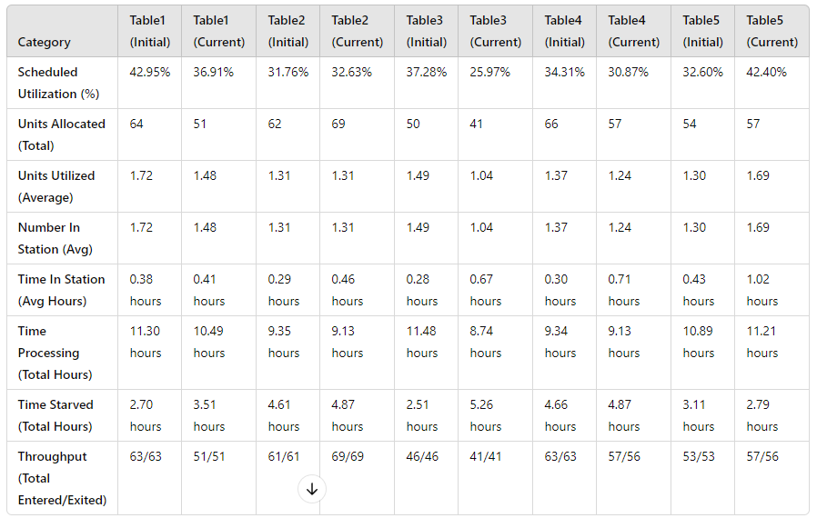

Week 3 Assignment
Initial Model: Restaurant
For this assignment, I create a restaurant model. The restaurant has a frontdesk where customers will interact with the host or hostess to be seated, and there are 5 tables with a capacity of 4 customers. Also, the working hours of the restaurant is from 8am to 10pm so the restuarant accepts customers for 14 hours.
Simulation is as follows, 5 customers arrives every 15 minutes to the front end where it takes, on average, 3 minutes to be seated (random.exponential(3)) then customer will stay at their tables for, on average, 20 minutes, to enjoy their meals and pay for the food and exit the restaurant.

Analysis of bottlenecks
A clear botteneck of the current model is that the front desk can only handle up to 2 customers at a time and it takes 3 minutes to seat them.
Potential changes to the modal is to increase increase the number of hosts to 2-3 so that customers can be seated to the restaurants capacity which will allow the table servers to churn more customers.

We have the FrontDesk with an average utilization of 54% where it processed a total of 298 customers. Customers spent about 10 minutes waiting with some having to waiting 45mins.
As for the tables results, we see that tables we not used to full capacity due to the bottleneck at the frontdesk. Customer spent on average of 18 to 25 minutes at the restaurant, while some customers stay for over 2 hours in table 5.

Revised model
Changes applied is increase the number of hosts/hostess and maybe implement a better seating software the workers can use to increase efficiency which reduces the processing time at the front desk to 2 minutes instead of 3 minutes.


For the Front Desk, we see a decrease in Time in station meaning that customers are being processed more efficiently from
Comparison
We see a drop in utilization might be due to the randomness of the customers arriving but with lower customer processing time suggests that customers tha arrive at the front end are processed right away.


With the addition of another host in the restaurant, we saw a decrease in wait times for customers to seated from 10 minutes to 5 minutes.